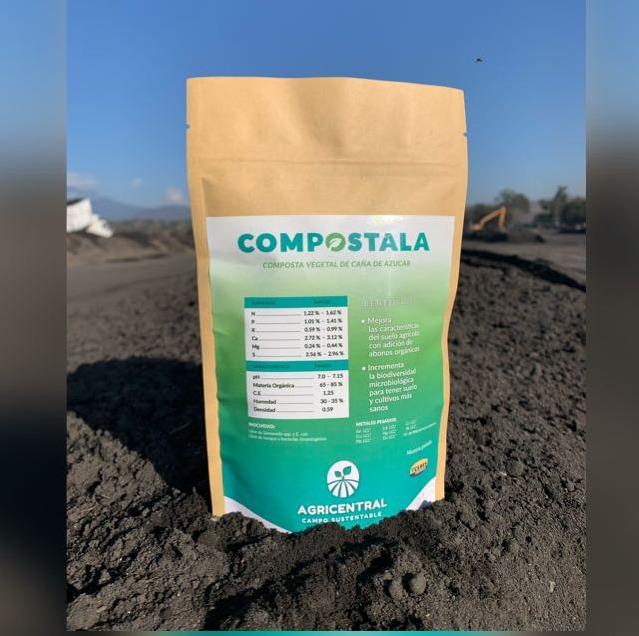
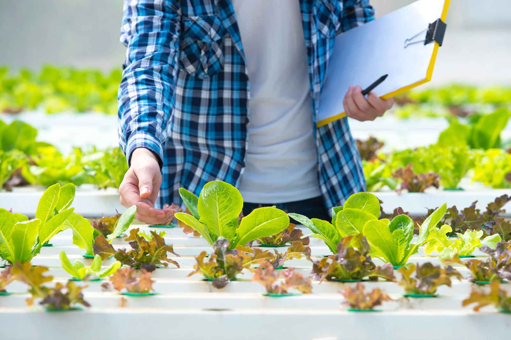

"Desde que implementamos la composta a base de caña, nuestros cultivos han mejorado notablemente y reducimos residuos significativamente. Una práctica sostenible que nos beneficia a todos."
- María López, Agricultora
Introducción
La composta a base de caña es una alternativa ecológica e innovadora para transformar los residuos agrícolas en un abono natural. Esta técnica mejora la calidad del suelo, fomenta prácticas sostenibles y contribuye a la reducción de desperdicios.
Materiales Necesarios
- Caña triturada
- Residuos orgánicos complementarios (hojas, restos de frutas, estiércol)
- Agua
- Contenedor o área de compostaje
- Herramientas para mezclar y airear
Proceso de Compostaje
El proceso se puede dividir en varias etapas:
- Preparación: Reúne y tritura la caña, junto con otros materiales orgánicos. Mezcla de forma homogénea.
- Montaje: Alterna capas de caña y otros residuos en el contenedor o área designada.
- Mantenimiento: Riega y airea la mezcla de manera regular para garantizar la descomposición adecuada.
- Maduración: Deja reposar la mezcla durante 3 a 6 meses, logrando un abono de gran calidad.
Es importante monitorear la humedad y la temperatura para optimizar la actividad de los microorganismos responsables de la descomposición.
Beneficios Ambientales y Agrícolas
- Reduce la acumulación innecesaria de residuos orgánicos.
- Enriquece la fertilidad del suelo.
- Aumenta la retención de agua y mejora la estructura del terreno.
- Fomenta la agricultura sustentable y la reutilización de recursos.
Preguntas Frecuentes
- ¿Cuánto tiempo tarda en estar lista la composta?
- El proceso puede tardar entre 3 y 6 meses, dependiendo del manejo y las condiciones ambientales.
- ¿Necesito algún aditivo especial?
- No es obligatorio, pero agregar una pequeña cantidad de estiércol o abono verde puede acelerar la descomposición.
- ¿Puedo mezclar recursos orgánicos diferentes?
- Sí, mezclarlos ayuda a obtener una composta más balanceada y nutritiva.
Testimonios
"La transformación de residuos en abono de calidad es sorprendente. Es una técnica que recomiendo para cualquier agricultor comprometido con el medio ambiente."
- Carlos Méndez, Experto en Agricultura Orgánica
Contacto
¿Tienes preguntas o deseas compartir tu experiencia con la composta de caña? Envíanos tus comentarios.